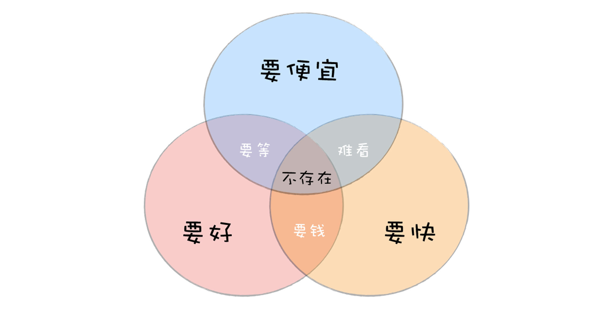
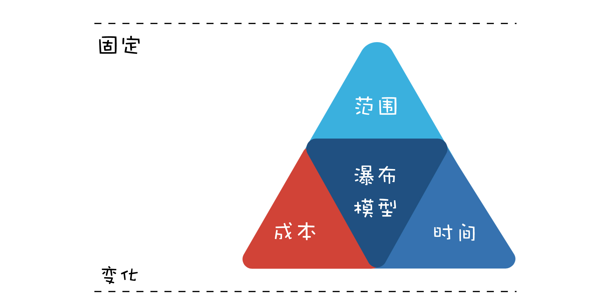
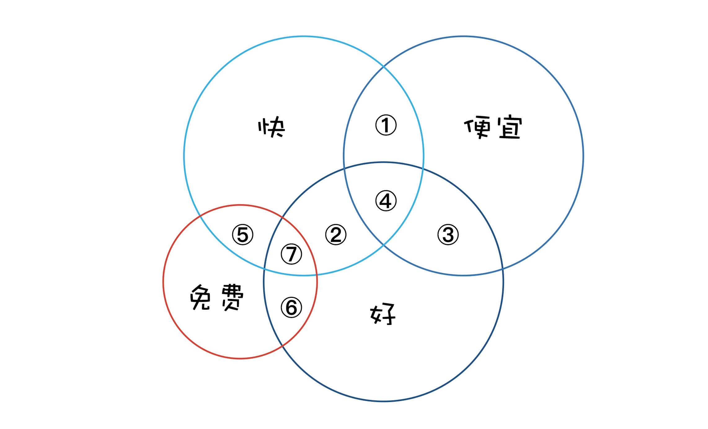

- 00 开篇词 你为什么应该学好软件工程？.md.html
- 01 到底应该怎样理解软件工程？.md.html
- 02 工程思维：把每件事都当作一个项目来推进.md.html
- 03 瀑布模型：像工厂流水线一样把软件开发分层化.md.html
- 04 瀑布模型之外，还有哪些开发模型？.md.html
- 05 敏捷开发到底是想解决什么问题？.md.html
- 06 大厂都在用哪些敏捷方法？（上）.md.html
- 07 大厂都在用哪些敏捷方法？（下）.md.html
- 08 怎样平衡软件质量与时间成本范围的关系？.md.html
- 09 为什么软件工程项目普遍不重视可行性分析？.md.html
- 10 如果你想技术转管理，先来试试管好一个项目.md.html
- 11 项目计划：代码未动，计划先行.md.html
- 12 流程和规范：红绿灯不是约束，而是用来提高效率.md.html
- 13 白天开会，加班写代码的节奏怎么破？.md.html
- 14 项目管理工具：一切管理问题，都应思考能否通过工具解决.md.html
- 15 风险管理：不能盲目乐观，凡事都应该有B计划.md.html
- 16 怎样才能写好项目文档？.md.html
- 17 需求分析到底要分析什么？怎么分析？.md.html
- 18 原型设计：如何用最小的代价完成产品特性？.md.html
- 19 作为程序员，你应该有产品意识.md.html
- 20 如何应对让人头疼的需求变更问题？.md.html
- 21 架构设计：普通程序员也能实现复杂系统？.md.html
- 22 如何为项目做好技术选型？.md.html
- 23 架构师：不想当架构师的程序员不是好程序员.md.html
- 24 技术债务：是继续修修补补凑合着用，还是推翻重来？.md.html
- 25 有哪些方法可以提高开发效率？.md.html
- 26 持续交付：如何做到随时发布新版本到生产环境？.md.html
- 27 软件工程师的核心竞争力是什么？（上）.md.html
- 28 软件工程师的核心竞争力是什么？（下）.md.html
- 29 自动化测试：如何把Bug杀死在摇篮里？.md.html
- 30 用好源代码管理工具，让你的协作更高效.md.html
- 31 软件测试要为产品质量负责吗？.md.html
- 32 软件测试：什么样的公司需要专职测试？.md.html
- 33 测试工具：为什么不应该通过QQ微信邮件报Bug？.md.html
- 34 账号密码泄露成灾，应该怎样预防？.md.html
- 35 版本发布：软件上线只是新的开始.md.html
- 36 DevOps工程师到底要做什么事情？.md.html
- 37 遇到线上故障，你和高手的差距在哪里？.md.html
- 38 日志管理：如何借助工具快速发现和定位产品问题 ？.md.html
- 39 项目总结：做好项目复盘，把经验变成能力.md.html
- 40 最佳实践：小团队如何应用软件工程？.md.html
- 41 为什么程序员的业余项目大多都死了？.md.html
- 42 反面案例：盘点那些失败的软件项目.md.html
- 43 以VS Code为例，看大型开源项目是如何应用软件工程的？.md.html
- 44 微软、谷歌、阿里巴巴等大厂是怎样应用软件工程的？.md.html
- 45 从软件工程的角度看微服务、云计算、人工智能这些新技术.md.html
- 一问一答第1期 30个软件开发常见问题解决策略.md.html
- 一问一答第2期 30个软件开发常见问题解决策略.md.html
- 一问一答第3期 18个软件开发常见问题解决策略.md.html
- 一问一答第4期 14个软件开发常见问题解决策略.md.html
- 一问一答第5期 22个软件开发常见问题解决策略.md.html
- 学习攻略 怎样学好软件工程？.md.html
- 特别放送 从软件工程的角度解读任正非的新年公开信.md.html
- 结束语 万事皆项目，软件工程无处不在.md.html
- 捐赠
08 怎样平衡软件质量与时间成本范围的关系？
你好，我是宝玉，我今天与你分享的主题是：怎样平衡软件质量与时间、成本、范围的关系。
在《从软件工程的角度解读任正非的新年公开信》这篇文章中，我已经提到了“软件项目管理金三角”的概念。由于这个内容对于软件工程来说，非常之重要，所以我今天特别展开再讲一下。
你会发现，在实际的软件项目中不乏这样的例子：
一个项目，正常估算，要三个月才能完成，但是老板或客户要压缩到一个月完成，而你不知道如何说服他们；
项目开发一半，产品经理告诉你，有一个非常紧急的功能，要增加到这个版本中，你不知道该不该拒绝，或者如何拒绝；
听说迭代模型很好，你也尝试使用迭代模型，但是每次迭代时间到了还是完不成，只能把迭代时间延长，最后又做回传统的瀑布模型了；
你们组用瀑布模型开发，一到项目后期总免不了加班加点赶进度，为什么他们用敏捷开发的加班要少一些？
其实，这些日常项目中涉及时间、成本和范围的问题，都离不开“软件项目管理金三角”的概念。
掌握好这个知识点，学会平衡软件质量与时间成本范围的关系，可以帮助你更好的驾驭项目中的各种问题，也可以帮助你更好地理解软件工程中各个模型，尤其是瀑布模型和敏捷开发。
什么是软件项目管理金三角？
在现实生活中，我们都知道，做产品想“多、快、好、省”都占着，是不可能的，最多只能选两样。
想要便宜和质量好，就要花时间等；想要快还要质量好，那就得多花钱；想要又便宜又快，那就得接受难用、质量差。

而在软件项目中，也有一个类似的平衡关系，就是软件质量（产品的质量，客户的满意度）与范围（需要实现多少功能）、时间（多久可以完成）、成本（花多少钱）四个要素之间的平衡。

上面这个图就是著名的项目管理金三角（以下简称“金三角”），三条边分别是时间、成本和范围，中间是质量。
为什么四个要素，是“质量”放在三角形的中间？
因为软件工程的目标就是要构建和维护高质量的软件，所以项目的质量是高于一切的。也就是说，“质量”这个因素一般不会妥协，因此把“质量”放在三角形中间，然后在时间、成本、范围这三条边之间寻求平衡。
质量往往也是其他三个因素平衡后结果的体现，想要做的快、成本低、功能多，最后一定是个质量很差的产品。
如何应用“管理金三角”做决策？
我在专栏中常用“道术器”来比喻软件工程中的各个知识点，“金三角”无疑就是“道”级别的。
项目管理其实就是项目中一系列问题的平衡和妥协，而“金三角”理论则为我们的平衡提供了理论指导，了解这三个因素分别对项目其他方面产生的影响，可以帮助你在做决策时进行权衡取舍。
当你接手一个项目，项目的进度、成本和范围指标很容易可以跟踪到。有了这些信息，你就可以及时发现问题，调整“金三角”的边，及时解决，以防止这些小问题发展成大问题。
我来举两个例子，看看“金三角”是如何应用的。
- 老板要压缩项目时间怎么办？
当项目经理，常遇到的问题之一就是时间被压缩，比如文章中开头举的例子，老板问我一个项目多久能完成，我按照经验，觉得要三个月，老板觉得三个月太久了，要砍到一个月就上线。
最开始的时候，我就是据理力争，说这不科学，肯定不行呀。老板说时间点很重要，必须要一个月上线。结果就是大家吵得不欢而散，最后还得加班加点做，质量也不好。
后来我学乖了，先用“金三角”知识分析了一下：老板希望时间是 1 个月，也就是说时间这条边被缩短了，那么结果就是会影响到另两条边：范围和成本，如果另外两条边可以调整，也不是不可以。
于是再遇到这种问题，我就换了一种方式跟老板沟通：“一个月也不是不行，就是我们的需求调整一下，第一个版本只能做一些核心功能，剩下的后面版本再加上（调整范围）。另外还得给我加两人，不然真做不完！（增加成本）”
这样的方案一提出来，就好沟通多了，最后重点就变成了砍多少功能和加多少人的事情了。
- 产品经理要临时加需求怎么办？
在文章开篇我提到一种情况，项目开发一半，产品经理告诉你，有一个非常紧急的功能，要增加到这个版本中，怎么办？我们拿“金三角”知识先套用一下。
增加需求，也就是范围这条边要增加，那就必然对成本和时间这两条边造成影响，要么延期，要么增加成本。
面对这种临时加需求的情况，我们也不需要直接说不能加，而是清楚的让产品经理认识到这样做的后果：进度延期，需要更多的成本。如果这个功能真的太重要，可以接受延期，也不是不可以接受，那就重新制定新的项目计划好了。
所以你看，如果我们能应用好“金三角”的知识，很多软件项目中问题，一下子就多了很多方案可以选择了。
瀑布模型和敏捷开发如何平衡时间成本范围的关系？
除了可以将“金三角”的知识应用在软件项目中，还可以应用它来理解和应用软件工程中的开发模式，尤其是瀑布模型和敏捷开发这两种典型的开发模式。
瀑布模型有严格的阶段划分，有需求分析、系统设计、开发和测试等阶段，通常在开发过程中不接受需求变更，也就是说，我们可以认为瀑布模型的范围是固定的，其他两条边时间和成本是变量。
所以使用瀑布模型开发，如果中间发现不能如期完成进度，通常选择的方案就是延期（加班），或者往项目中加人。

我们再来看敏捷开发，敏捷开发中，是采用固定时间周期的开发模式，例如每两周一个 Sprint，团队人数也比较少。所以，在敏捷开发中，时间和成本两条边是固定，就只有范围这条边是变量。
这就是为什么在敏捷开发中，每个 Sprint 开始前都要开 Sprint 计划会，大家一起选择下个 Sprint 能做完的任务，甚至于在 Sprint 结束时，没能完成的任务会放到下个 Sprint 再做。

这时候再想想文章开头我们提到的问题：
听说迭代模型很好，你也尝试使用迭代模型，但是每次迭代时间到了还是完不成，只能把迭代时间延长，最后又做回传统的瀑布模型了。
你现在是不是就明白了：如果不能固定“时间”这条边，就会导致时间也成了变量，迭代自然无法正常推进。
如何平衡好软件质量与时间成本范围的关系？
那么怎么样才能平衡好软件质量与时间成本范围的关系呢？
前面我们说日常生活中“多、快、好、省”最多只能选两样，其实如何平衡好软件质量与时间成本范围的关系也是一样的道理，我们只能最多选择两样，然后在另一边或者另两条边去寻找平衡。
所以第一件事就是：从时间、成本和范围这三条边中找出来固定的一条或者两条边，再去调整另一条边。
下面，我来分析一些案例，帮助你更好地理解。
- 淘宝网站第一个版本是怎么做到一个月上线的？
这个故事其实我是从极客时间《从 0 开始学架构》专栏看来的，李运华老师在《架构设计原则案例》一文中举了淘宝网站的例子：
2003 年 4 月 7 日马云提出成立淘宝，2003 年 5 月 10 日淘宝就上线了，中间只用了一个月时间。
好，如果你是当时的淘宝网站负责人，马云要你一个月上线淘宝网站，功能还不能少，你怎么办？
第一件事当然是先应用“金三角”分析一下：时间这条边被固定了，只能一个月；功能也不能少，范围这条边也限制住了，那就只能在成本上想办法了。要么一下子雇很多牛人，要么直接买一个现成的电子商务网站，然后修改。
显然，直接买一个网站，再雇一堆牛人的方案最好，所以淘宝网站就这样在一个买来的网站基础上，由一堆牛人快速搭建起来了。归功于淘宝网站的快速上线，刚推出后，正好赶上“非典”，网购需求增大，淘宝网一下子就火爆起来了。
从成本角度我们还有可以去做的，比如说有同学在看完《06 大厂都在用哪些敏捷方法？（上）》这篇文章后，也想在团队里面推行代码审查和 CI，但是苦于搭建这一套 git+CI 的系统没有经验，不知道该如何下手，怎么办呢？
我的建议就是刚开始就没必要自己去折腾了，买一套 GitHub 的企业版，加上支持 GitHub 的商业 CI 系统，花不了多少钱，而且可以节约大量搭建这种系统的时间。
- 极限编程是怎么做到“极限”的？
前面在介绍敏捷开发的时候，也提到了极限编程（eXtreme Programming，XP），是目前敏捷开发主流的工程实践方法，极限编程的“极限”（Extreme），意思就是如果某个实践好，就将其做到极限。比如：
如果做测试好，就让每个开发人员都做测试 ;
如果集成测试重要，就每天都做几次测试和集成 ;
如果简单的就是好，那么我们就尽可能的选择简单的方法实现系统功能 ;
……
极限编程的“极限”理念，产生了很多优秀的实践方法，例如持续集成、自动化测试、重构等。
这些实践帮助我们可以在短时间的迭代中，产生高质量的代码。我们用“金三角”的理论来分析一下极限编程在 Sprint 中的应用。
在一个 Sprint 中，计划好了当前 Sprint 要做的工作内容后，那么极限编程怎么帮助我们提高代码质量呢？
一个 Sprint 要做的内容是确定的，相当于成本和范围这两条边都固定了，时间这条边就成为变量了。要么通过加班延长工作时间，要么通过提升效率、减少浪费帮助我们提升时间利用率。
极限编程，就是通过帮助我们提升效率和减少浪费这方面来做的。比如说：
持续集成，通过自动化的方式帮助我们部署，节约了大量需要人去手动部署的时间；
自动化测试，通过自动化测试，节约测试时间，另外，有了自动化测试，可以避免后面修改代码产生 Bug，减少了大量的浪费；
只做刚好的设计，避免设计时考虑了太多不必要的可能，造成浪费。
其实我们在项目中也有很多地方可以借鉴这种思路，比如说写代码的时候，少自己造轮子，多使用成熟的开源或者商业组件，可以提升效率；比如把需求想清楚搞清楚再去开发，可以减少很多返工的时间成本！
- MVP 模式是怎么诞生的？
这些年流行的 MVP（minimum viable product，最小化的可行性产品）模式，是一种快速推出产品的模式：一开始只推出最核心的功能，满足用户最核心的需求，然后在用户的使用过程中收集反馈，进一步升级迭代。
这种模式怎么诞生的呢？还是应用“金三角”理论，要快速推出产品，还想成本不用太高，那就意味着时间和成本这两条边是固定的，剩下范围这个变量。
所以最简单有效的办法就是砍掉一些重要性不那么高的功能需求，只保留最核心的需求。通过缩小范围的方式，达到快速推出高质量产品的效果。
类似的道理，我们程序员，在遇到很多功能忙不过来的时候，可以主动的去和项目经理协商，砍掉一些不那么重要的需求，把精力放在核心需求上，保证项目可以如期上线。
总结
其实，要平衡好软件质量与时间成本范围的关系并不难，你只需要记住，最重要的是根据“金三角”的三条边，找出来固定的一条或两条边，然后去调整剩下的边，达到平衡。
软件项目的“金三角”很多人都知道，主要是不知道如何应用到实际的项目中，希望这篇文章能为你提供一些思路，帮助你在项目中真正应用好这个非常实用的知识。
课后思考
关于今天的内容，邹欣老师在《构建之法》书中，提出了一个很好的问题。我也在这里列出来，希望你可以思考一下。

顾客对于要交付的软件和服务，都是有很多美好的需求的， 用户希望软件开发的又快， 又便宜 （人工便宜），质量又好， 最好是免费的。 那么，如果只满足部分的需求， 我们会得到什么样的软件呢？
例如，上图的 ① 说明， 如果希望软件做得又快，又低成本（人工便宜）， 不考虑其他要求， 那么，我们会得到大致什么样的软件呢？
例如，上图的 ⑤ 说明， 如果希望软件是免费的，而且要很快交付，越快越好， 那么，这样的软件有什么特点呢？
请把 ① 到 ⑦ 的需求组合会导致什么样的软件， 会出现什么样的问题， 都列出来。
另外，对于质量和时间成本范围的平衡，你有没有什么应用的案例？你对你当前项目的时间、范围和成本都清晰吗？有没有什么可以做的更好的地方？欢迎在留言区与我分享讨论。
感谢阅读，如果你觉得这篇文章对你有一些启发，也欢迎把它分享给你的朋友。
© 2019 - 2023 Liangliang Lee. Powered by gin and hexo-theme-book.